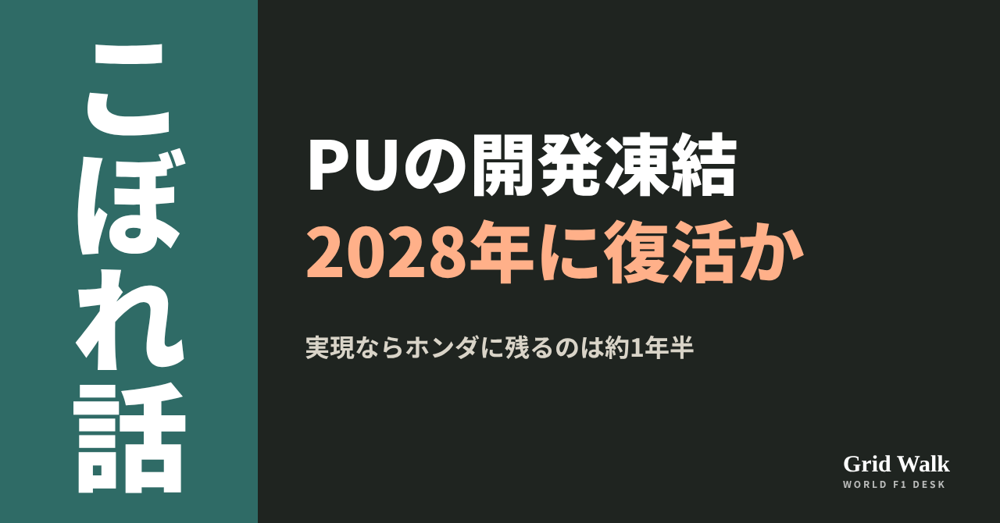
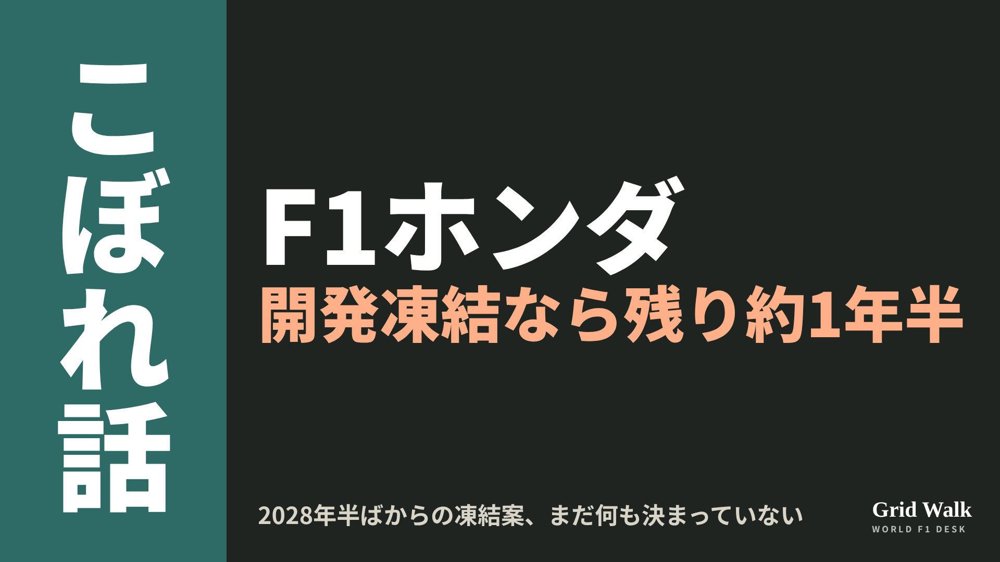
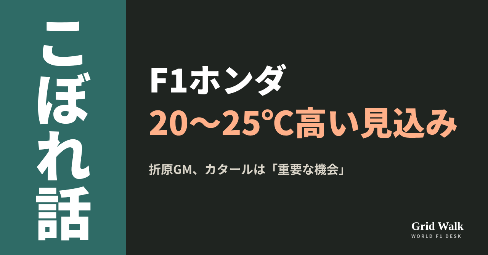
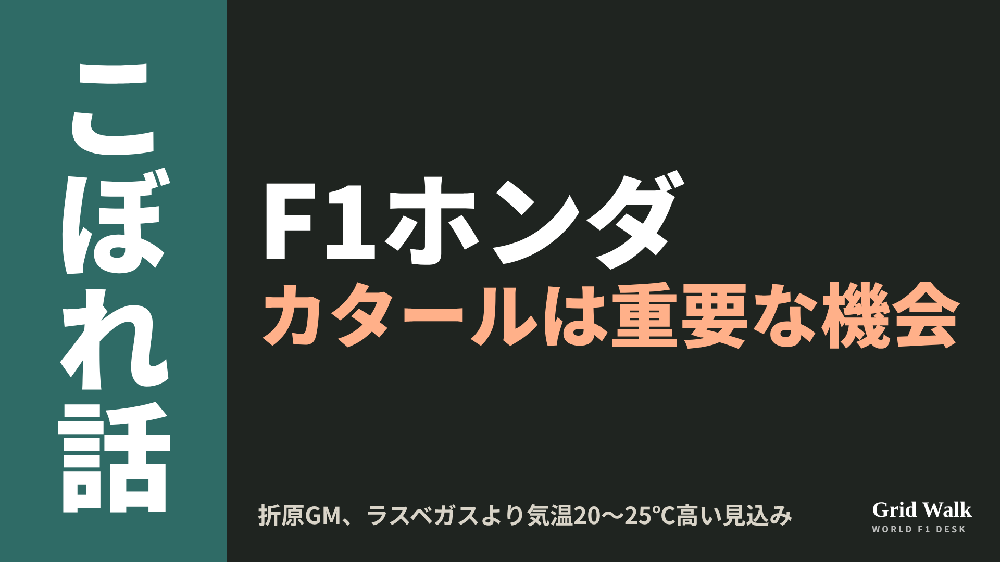
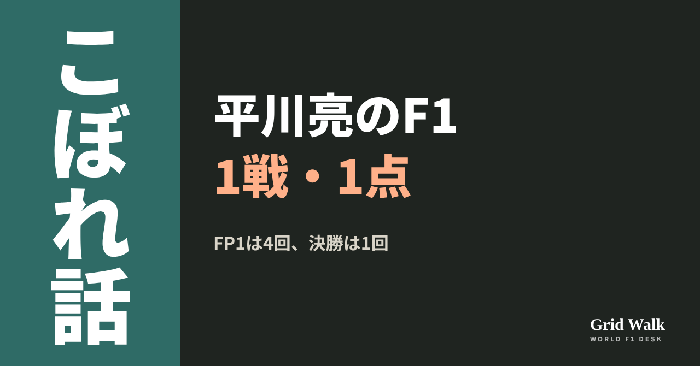
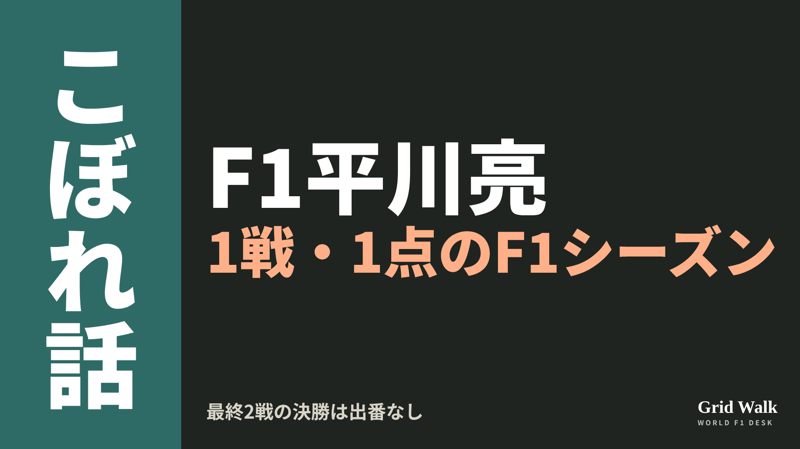

<meta charset="utf-8"><title>11/26夕方のコラム note貼り付け</title>
<style>
/* one column of numbered paste steps; text steps vs image steps differ by marker */
:root{--bg:#F5F4F0;--card:#FFFFFF;--ink:#1D2321;--mute:#5F665F;--line:#DCDAD2;--btn:#1F5FBF;--btnok:#2E8B4F;--img:#E9F3EC;--imgink:#22663B;--sans:'IBM Plex Sans JP','Hiragino Sans','Noto Sans JP',sans-serif}
@media (prefers-color-scheme:dark){:root:not([data-theme="light"]){--bg:#171A19;--card:#202423;--ink:#ECEDE8;--mute:#A3AAA2;--line:#343937;--btn:#4D8BE6;--btnok:#3FA866;--img:#1E2C23;--imgink:#8FD3A6;color-scheme:dark}}
:root[data-theme="dark"]{--bg:#171A19;--card:#202423;--ink:#ECEDE8;--mute:#A3AAA2;--line:#343937;--btn:#4D8BE6;--btnok:#3FA866;--img:#1E2C23;--imgink:#8FD3A6;color-scheme:dark}
body{background:var(--bg);color:var(--ink);font-family:var(--sans);font-size:15px;line-height:1.75;padding:20px 16px 60px}
main{max-width:680px;margin:0 auto;display:grid;gap:28px}
header h1{font-size:22px;margin:0 0 6px;text-wrap:balance}
header p{margin:0;color:var(--mute);font-size:14px}
nav{display:flex;gap:8px;flex-wrap:wrap;margin-top:12px}
nav a{border:1px solid var(--line);border-radius:999px;padding:4px 14px;color:var(--ink);text-decoration:none;font-size:14px;background:var(--card)}
.part h2{font-size:18px;line-height:1.5;margin:0 0 12px;text-wrap:balance;display:flex;gap:10px;align-items:baseline;flex-wrap:wrap}
.tag{font-size:13px;background:var(--ink);color:var(--bg);border-radius:6px;padding:1px 9px}
.steps{list-style:none;margin:0;padding:0;display:grid;gap:12px}
.st{background:var(--card);border:1px solid var(--line);border-radius:12px;padding:12px;min-width:0}
.hd{display:flex;align-items:center;gap:8px;margin-bottom:8px}
.no{width:26px;height:26px;border-radius:50%;background:var(--btn);color:#fff;display:inline-flex;align-items:center;justify-content:center;font-size:13px;font-weight:700;flex:0 0 26px}
.im .no{background:var(--btnok)}
.hd em{font-style:normal;font-size:12px;background:var(--img);color:var(--imgink);border-radius:6px;padding:0 8px}
.bx{font-size:13.5px;line-height:1.7;border:1px solid var(--line);border-radius:8px;padding:8px 10px;max-height:110px;overflow:auto;overflow-wrap:anywhere}
.bx.tall{max-height:150px}.bx p{margin:0 0 6px}.bx h2{font-size:14px;margin:8px 0 4px}.bx a{color:var(--btn)}
.st img{display:block;width:100%;max-width:100%;border:1px solid var(--line);border-radius:8px}
.sub{font-size:12.5px;color:var(--mute);margin:6px 0 0}
.cp{width:100%;margin-top:8px;padding:12px;border:0;border-radius:10px;background:var(--btn);color:#fff;font:600 15px var(--sans);cursor:pointer}
.cp.ok{background:var(--btnok)}.cp.dl{background:var(--btnok)}.cp:focus-visible{outline:3px solid var(--ink);outline-offset:2px}
.xh{font-size:15px;margin:20px 0 10px}
.fb{font-size:13px;line-height:1.7;margin:8px 0 0;padding:8px 10px;border-radius:8px;background:var(--img);color:var(--imgink)}
.opts{display:grid;grid-template-columns:repeat(auto-fill,minmax(240px,1fr));gap:10px}
.opt{min-width:0}.opt img{display:block;width:100%;border:1px solid var(--line);border-radius:8px}
.ol{display:flex;align-items:center;gap:8px;margin-top:6px}.ol b{font-size:13px;flex:0 0 auto}.ol .on{font-size:12.5px;color:var(--mute);flex:1;min-width:0}.ol .cp{width:auto;flex:0 0 auto;padding:9px 14px}.ol .cp{margin:0;padding:9px}
.toast{font-size:13px;color:var(--mute);margin-top:6px}
</style>
<main><header><h1>11/26夕方のコラム note貼り付け</h1><p>いま公開済みは3本です。青い番号は文章、緑は画像です。</p><nav><a href="#p1">1</a><a href="#p2">2</a><a href="#p3">3</a></nav></header><section class="part" id="p1"><h2><span class="tag">OFF GRID</span>PUの開発凍結が復活か　実現ならホンダの追い上げは約1年半</h2><p class="sub">サイトに公開：18:51</p><ol class="steps">
<li class="st im"><div class="hd"><span class="no">1</span><b>見出し画像</b><em>画像</em></div><button class="cp dl" data-img="img/engine-freeze-honda-20261126.png" data-name="engine-freeze-honda-20261126_見出し画像.png">ダウンロード</button></li>
<li class="st"><div class="hd"><span class="no">2</span><b>タイトル</b></div><div class="bx" id="p1t">PUの開発凍結が復活か　実現ならホンダの追い上げは約1年半</div><button class="cp" data-plain="p1t">タイトルをコピー</button></li>
<li class="st"><div class="hd"><span class="no">3</span><b>本文</b></div><div class="bx tall" id="p1r"><p>2030年にV8へ移る前に、今のパワーユニット（PU）の開発がまた止められるかもしれません。イギリスのThe Raceが11月25日、そう分析しました。可能性の話で、凍結するかどうかも、その時期も、まだ何も決まっていません。それでも、追い上げの途中のホンダには気になる話です。サイトの要約は https://f1gridwalk.github.io/news/en-therace-engine-freeze-return/ にあります。</p><p>The RaceとMotorionlineの記事の要約と、ADUOや開発の凍結の用語解説はサイトで → <a href="https://f1gridwalk.github.io/lens/engine-freeze-honda-20261126/?utm_source=note&amp;utm_campaign=engine-freeze-honda-20261126">https://f1gridwalk.github.io/lens/engine-freeze-honda-20261126/?utm_source=note&amp;utm_campaign=engine-freeze-honda-20261126</a></p><h2>前の2回はお金のため、今回は新しく来るメーカーのため</h2><p>The Raceによると、F1はこれまでにもエンジンの開発を凍結してきました。前のV8時代（2007〜13年の大半）と、空力規則が変わった2022〜25年です（V8時代は https://f1gridwalk.github.io/deep/rules/v8-era/ ）。どちらも主な理由はお金でした。</p><p>今回の理由は違うと記事は書いています。記事によると、ゼネラルモーターズ（GM）は2029年からキャデラックに自前のV6を載せるつもりでしたが、その計画を棚上げしました。キャデラックは2030年の規則変更までフェラーリの客のままです。すると今のメーカーには、2029年まで今のPUを磨きながらV8も作る二重の仕事が残り、GMだけがV8に全部の力を注げることになります。既存のメーカーはそれを嫌がっている、というのがThe Raceの見立てです。</p><p>イタリアのMotorionline（F1GrandPrix）は、GMはV6のために行った単気筒の試験のデータをV8に生かし、フェラーリからの供給は2029年末まで延ばしたと書いています。V8は今と同じ気筒の寸法を使うので、その試験はむだにならないとThe Raceも見ています。サイトの要約は https://f1gridwalk.github.io/news/it-motorionline-engine-freeze-2028/ です。</p><h2>凍結されるなら2028年半ばから</h2><p>The Raceの取材では、2030年の規則がすべて固まるのはおそらく2027年半ばより後で、今のPUは2028年半ばから凍結される可能性があります。そうなれば、その時点の性能のまま2029年末まで走るので、いま遅れているメーカーが追いつける時間は事実上1シーズン半です。</p><p>凍結されれば、遅れたメーカーに追加の改良を認めるADUO（ https://f1gridwalk.github.io/deep/rules/aduo/ ）も止まります。ただ記事は、遅れたメーカーを助ける考え方は先の規則にも入るだろうと見ています。これまでの凍結でも、信頼性のための変更などの余地で性能は伸ばされてきたので、完全には止まらないだろうともしています（凍結の決まりは https://f1gridwalk.github.io/deep/rules/development-freeze/ ）。</p><h2>ホンダに残る時間</h2><p>記事は、とくに今のホンダにとって時間との競争がきつくなると書いています。F1公式の順位表では、ホンダのPUを積むアストンマーティンはコンストラクターズ10位、7点です。ホンダの来季のADUOの枠は、11月11日のコラム https://f1gridwalk.github.io/lens/aduo-third-review-honda-20261111/ で紹介しました。</p><p>FIAは11月20日、2030年から入れるPUの枠組み（2.1リッターのV8ターボに、限られたハイブリッド）に、FIA、FOM、チーム、PUメーカーが全会一致で合意したと発表しました。規則はこれから上海の世界モータースポーツ評議会（ https://f1gridwalk.github.io/deep/rules/wmsc/ ）に出され、承認が条件です。この発表文には、今のPUの凍結の話は出てきません。</p><p>編集部としては、凍結が本当に来るなら、ホンダにとっての締め切りは2030年ではなく2028年半ばになると見ています。そこまでに詰めた差が、2029年末までの立ち位置になるからです。</p><p><strong>2028年半ばからの開発凍結。新しく来るメーカーとの公平のためなら、あなたは賛成ですか？</strong></p><p>━━━━━━━━━━</p><p><strong>F1 Grid Walk では、世界のF1ニュースを毎日日本語でまとめています。</strong></p><p>海外の記事の要約を、毎日載せています。</p><p><a href="https://f1gridwalk.github.io/">https://f1gridwalk.github.io/</a></p><p>ほかの海外記事も読みたい方は、F1 Grid Walkへ。</p><p><a href="https://f1gridwalk.github.io/lens/engine-freeze-honda-20261126/">https://f1gridwalk.github.io/lens/engine-freeze-honda-20261126/</a></p><p>━━━━━━━━━━</p><p><a href="https://www.the-race.com/formula-1/unusual-reason-f1-engine-freeze-could-return/">出典：The Race（イギリス）</a></p><p><a href="https://f1grandprix.motorionline.com/formula-1-v8-2030-congelamento-motori-cadillac-general-motors/">出典：Motorionline（F1GrandPrix）（イタリア）</a></p><p><a href="https://www.fia.com/news/v8-future-unanimous-agreement-reached-fias-2030-formula-1-power-unit-framework">出典：FIA（国際）</a></p><p><a href="https://www.formula1.com/en/results/2026/team">出典：F1公式サイト（イギリス）</a></p></div><button class="cp" data-rich="p1r">本文をコピー</button></li>
<li class="st"><div class="hd"><span class="no">4</span><b>ハッシュタグ</b></div><div class="bx" id="p1h">#F1 #F1jp #ホンダ #アストンマーティン #キャデラック #パワーユニット #ADUO #V8 #F1こぼれ話 #OFFGRID</div><button class="cp" data-plain="p1h">タグをコピー</button></li>
</ol><h3 class="xh">X</h3><ol class="steps">
<li class="st im"><div class="hd"><b>X用の画像</b><em>画像</em></div><button class="cp dl" data-img="img/x_engine-freeze-honda-20261126.png" data-name="x_engine-freeze-honda-20261126.png">ダウンロード</button></li>
<li class="st"><div class="hd"><b>① noteをシェアするときの文</b></div><div class="bx" id="p1x0">2030年のV8を前に、今のPUの開発凍結が復活する可能性を英The Raceが分析。2028年半ばからなら、遅れているホンダが追いつける時間は約1年半。まだ何も決まっていません。noteにまとめました #F1jp #ホンダ</div><button class="cp" data-plain="p1x0">コピー</button></li>
<li class="st"><div class="hd"><b>② ①への返信</b></div><div class="bx" id="p1x1">ほかの海外記事も読みたい方は、F1 Grid Walkへ。
https://f1gridwalk.github.io/lens/engine-freeze-honda-20261126/?utm_source=x&amp;utm_campaign=engine-freeze-honda-20261126</div><button class="cp" data-plain="p1x1">コピー</button></li>
<li class="st"><div class="hd"><b>③ ②への返信</b></div><div class="bx" id="p1x2">毎日の海外F1ニュースは、日本語でこちらにまとめています。
https://f1gridwalk.github.io/</div><button class="cp" data-plain="p1x2">コピー</button></li>
</ol></section><section class="part" id="p2"><h2><span class="tag">OFF GRID</span>ホンダ折原GM「重要な機会」　カタールは気温20～25℃高い見込み</h2><p class="sub">サイトに公開：18:49</p><ol class="steps">
<li class="st im"><div class="hd"><span class="no">1</span><b>見出し画像</b><em>画像</em></div><button class="cp dl" data-img="img/honda-qatar-reliability-test-20261126.png" data-name="honda-qatar-reliability-test-20261126_見出し画像.png">ダウンロード</button></li>
<li class="st"><div class="hd"><span class="no">2</span><b>タイトル</b></div><div class="bx" id="p2t">ホンダ折原GM「重要な機会」　カタールは気温20～25℃高い見込み</div><button class="cp" data-plain="p2t">タイトルをコピー</button></li>
<li class="st"><div class="hd"><span class="no">3</span><b>本文</b></div><div class="bx tall" id="p2r"><p>第22戦カタールGPを前に、ホンダが公式サイトに日本語のプレビューを載せました。HRCのトラックサイド・ゼネラルマネージャー兼チーフエンジニア、折原伸太郎GMがまず挙げたのは、前戦との気温の差です。</p><p>折原GMのコメントが載ったホンダ公式のプレビューへのリンクと、ラスベガスの結果を追ったコラムへの案内はサイトで → <a href="https://f1gridwalk.github.io/lens/honda-qatar-reliability-test-20261126/?utm_source=note&amp;utm_campaign=honda-qatar-reliability-test-20261126">https://f1gridwalk.github.io/lens/honda-qatar-reliability-test-20261126/?utm_source=note&amp;utm_campaign=honda-qatar-reliability-test-20261126</a></p><blockquote><p>「3連戦の2戦目となる今週末のカタールGPでは、先日のラスベガスで経験した気温よりも20～25℃ほど高くなる見込みです。そのため、パワーユニットのセッティングや最適化についても大幅な変更が必要になります。」（折原、Honda公式／日本）</p></blockquote><p>ラスベガスから、暑いカタールへ。F1公式のカレンダーでは、カタールGPは11月27〜29日、続く第23戦アブダビGPは12月4〜6日で、今季はこの2戦で終わります。</p><h2>潤滑に厳しい高速コース</h2><p>折原GMは、コースの形にも触れています。</p><blockquote><p>「カタールのサーキットは高速レイアウトで、中高速コーナーが多く、潤滑システムにとって厳しいサーキットです。それでも、シーズンを通じて改良を重ねてきたパッケージと信頼性を確認するうえで、重要な機会になると考えています。」（同）</p></blockquote><p>ホンダのプレビューは、電動化が進んだ今季の規則のもとで、カタールは回生量とパワーアシストを制御するエネルギーマネジメントが難しいサーキットだとも書いています。ピレリは、同じタイヤを使える周回数の上限を27周としています（コラム https://f1gridwalk.github.io/lens/qatar-tyre-stint-limit-20261121/ ）。2023年の第18戦で、多くのドライバーがレースのあとに脱水症状などで体調不良を訴えたことにも触れています。</p><p>水曜日の予定も明かしました。</p><blockquote><p>「水曜日には、アメリカから空輸されるパワーユニットのメンテナンスをサーキットで行う予定です。また、引き続きデータの分析を進め、レースウイークに向けて準備を整えていきます」（同）</p></blockquote><h2>ラスベガスの結果と、残り2戦</h2><p>前戦ラスベガスGPは、F1公式の結果でランス・ストロールが17位で完走、フェルナンド・アロンソは49周でDNF（リタイア）となり、19位に数えられています。ストロールの完走と、アロンソが最後の周に車を止めた経緯は、コラム https://f1gridwalk.github.io/lens/honda-vegas-right-direction-20261123/ で紹介しています。カタールの1回目のフリー走行では、アロンソの車にサードドライバーのジャック・クロフォードが乗ります（コラム https://f1gridwalk.github.io/lens/crawford-qatar-fp1-20261126/ ）。</p><p>ホンダのプレビューによると、アストンマーティンは残り2戦で、コンストラクターズ10位からの浮上を目指します。F1公式の順位表では、10位のアストンマーティンは7点、9位のウィリアムズは16点です。</p><p>編集部としては、折原GMがカタールを、シーズンを通じて重ねてきた改良と信頼性を確かめる機会と位置づけている点に注目しています。気温がラスベガスより大きく上がり、潤滑にも厳しいコースで2台がどこまで走れるかは、来季に向けた手がかりにもなりそうです。</p><p><strong>暑いカタールで、ホンダのパワーユニットを積む2台はそろって完走できると思いますか？</strong></p><p>━━━━━━━━━━</p><p><strong>F1 Grid Walk では、世界のF1ニュースを毎日日本語でまとめています。</strong></p><p>海外の記事の要約を、毎日載せています。</p><p><a href="https://f1gridwalk.github.io/">https://f1gridwalk.github.io/</a></p><p>ほかの海外記事も読みたい方は、F1 Grid Walkへ。</p><p><a href="https://f1gridwalk.github.io/lens/honda-qatar-reliability-test-20261126/">https://f1gridwalk.github.io/lens/honda-qatar-reliability-test-20261126/</a></p><p>━━━━━━━━━━</p><p><a href="https://global.honda/jp/F1/race/2026/Qatar/preview/">出典：Honda（公式）（日本）</a></p><p><a href="https://www.formula1.com/en/results/2026/races/1300/las-vegas/race-result">出典：F1公式サイト（イギリス）</a></p><p><a href="https://www.formula1.com/en/results/2026/team">出典：F1公式サイト（イギリス）</a></p><p><a href="https://www.formula1.com/en/racing/2026">出典：F1公式サイト（イギリス）</a></p></div><button class="cp" data-rich="p2r">本文をコピー</button></li>
<li class="st"><div class="hd"><span class="no">4</span><b>ハッシュタグ</b></div><div class="bx" id="p2h">#F1 #F1jp #ホンダ #アストンマーティン #折原伸太郎 #カタールGP #パワーユニット #F1こぼれ話 #OFFGRID</div><button class="cp" data-plain="p2h">タグをコピー</button></li>
</ol><h3 class="xh">X</h3><ol class="steps">
<li class="st im"><div class="hd"><b>X用の画像</b><em>画像</em></div><button class="cp dl" data-img="img/x_honda-qatar-reliability-test-20261126.png" data-name="x_honda-qatar-reliability-test-20261126.png">ダウンロード</button></li>
<li class="st"><div class="hd"><b>① noteをシェアするときの文</b></div><div class="bx" id="p2x0">カタールGPはラスベガスより気温が20～25℃ほど高くなる見込み。ホンダの折原GMは、改良を重ねた信頼性を確かめる「重要な機会」と話しています。noteにまとめました #F1jp #ホンダ #カタールGP</div><button class="cp" data-plain="p2x0">コピー</button></li>
<li class="st"><div class="hd"><b>② ①への返信</b></div><div class="bx" id="p2x1">ほかの海外記事も読みたい方は、F1 Grid Walkへ。
https://f1gridwalk.github.io/lens/honda-qatar-reliability-test-20261126/?utm_source=x&amp;utm_campaign=honda-qatar-reliability-test-20261126</div><button class="cp" data-plain="p2x1">コピー</button></li>
<li class="st"><div class="hd"><b>③ ②への返信</b></div><div class="bx" id="p2x2">毎日の海外F1ニュースは、日本語でこちらにまとめています。
https://f1gridwalk.github.io/</div><button class="cp" data-plain="p2x2">コピー</button></li>
</ol></section><section class="part" id="p3"><h2><span class="tag">OFF GRID</span>平川亮、最終2戦の決勝は出番なし　1戦・1点のF1シーズン</h2><p class="sub">サイトに公開：18:47</p><ol class="steps">
<li class="st im"><div class="hd"><span class="no">1</span><b>見出し画像</b><em>画像</em></div><button class="cp dl" data-img="img/hirakawa-season-end-20261126.png" data-name="hirakawa-season-end-20261126_見出し画像.png">ダウンロード</button></li>
<li class="st"><div class="hd"><span class="no">2</span><b>タイトル</b></div><div class="bx" id="p3t">平川亮、最終2戦の決勝は出番なし　1戦・1点のF1シーズン</div><button class="cp" data-plain="p3t">タイトルをコピー</button></li>
<li class="st"><div class="hd"><span class="no">3</span><b>本文</b></div><div class="bx tall" id="p3r"><p>第22戦カタールGP（11月27〜29日）と最終戦アブダビGP（12月4〜6日）の決勝で、ハースに乗るのはオリバー・ベアマンとラファエル・カマラです。11月25日に出たハースのカタールGPのプレビューも、カマラが残り2戦をベアマンと走ると書いていて、平川亮の名前はありません。カマラの起用が決まった流れは、11月23日のOFF GRID（ https://f1gridwalk.github.io/lens/haas-camara-final-races-20261123/ ）で書いています。</p><p>メキシコの1点とラスベガスの雨のFP1のくわしい話はサイトで → <a href="https://f1gridwalk.github.io/lens/hirakawa-season-end-20261126/?utm_source=note&amp;utm_campaign=hirakawa-season-end-20261126">https://f1gridwalk.github.io/lens/hirakawa-season-end-20261126/?utm_source=note&amp;utm_campaign=hirakawa-season-end-20261126</a></p><p>これで、平川の今季のF1の決勝は1戦で終わる見込みです。F1公式のドライバーズランキングでは、平川は1点で21位。ハースの31点のうちの1点です。</p><h2>6月、はじめてのVF-26</h2><p>平川の今季のF1の出番を、記録で並べてみます。最初は6月26日、オーストリアGPの1回目のフリー走行（FP1）です。エステバン・オコンの車に乗り、ソフトタイヤで1分10秒493の19番手でした（ハース）。今年のクルマに乗るのは、これがはじめてでした。</p><blockquote><p>「今日はVF-26にはじめて乗りました」「慌ただしいセッションで、かなりの数のテストをこなすのに忙しかったけれど、すべてうまくいきました」（平川、ハース公式／アメリカ）</p></blockquote><p>2回目は7月24日のハンガリーGPのFP1で、今度はベアマンの車です。F1公式の結果では17番手、25周を走りました。</p><h2>「エステバンがクルマに戻る」の翌朝</h2><p>3回目は10月30日、メキシコシティGPのFP1。オコンの車で、1分19秒982の15番手でした（F1公式）。走り終えた平川は、こう話しています。</p><blockquote><p>「ブダペストで乗ったときからの性能の進歩を感じられて、本当にうれしいです」「走行プログラムをやりきり、クルマにも問題はなく、エステバンがクルマに戻るFP2に向けて一歩前に進めました」（平川、F1公式サイト／イギリス）</p></blockquote><p>ところが翌31日の朝、ハースは週末の残りを平川で走ると発表しました（ https://f1gridwalk.github.io/lens/hirakawa-f1-debut-20261101/ ）。FP3と予選を走り、F1公式の予選結果は18番手。決勝は71周を走りきり、13位でチェッカー、ほかの車への罰で繰り上がり、正式結果10位・1点でした（F1公式。くわしくは https://f1gridwalk.github.io/lens/hirakawa-first-point-20261102/ ）。</p><p>4回目は現地11月19日、ラスベガスGPのFP1で、ベアマンの車に乗りました。雨のため、セッションが終わるまで記録には1つもタイムが残りませんでした。平川はカマラとともに、雨用のタイヤでコースに出ています（あの1時間は https://f1gridwalk.github.io/lens/vegas-fp1-rain-no-times-20261121/ で）。</p><p>FP1は4回で、オコンの車とベアマンの車に2回ずつ。決勝に2戦を超えて出ていないドライバーを車1台につき年2回走らせる決まり（ https://f1gridwalk.github.io/deep/rules/rookie-fp1/ ）の回数は、数のうえでは、すべて平川が受け持った形です。</p><h2>来季は、まだ発表がない</h2><p>11月26日、ハースはベアマンの2027年の残留を発表し、来季はベアマンとカマラの2人で走ることが決まりました（ハース公式）。2027年の平川の予定については、まだ発表はありません。WECでは11月8日のモンツァで、トヨタの8号車で3度目の世界王者になっています（ https://f1gridwalk.github.io/topics/hirakawa-tenth-and-one-point-twice/ ）。</p><p>ハースはコンストラクターズ7位の31点で、8位のアウディとは3点差のまま、最終2戦に向かいます（F1公式。争いの中身は https://f1gridwalk.github.io/lens/haas-audi-seventh-place-20261125/ ）。編集部としては、4回のFP1と1回の決勝で、平川は回ってきた出番をほぼ形にしたと見ています。その1点が、最後の2戦でハースを7位に残す1点になるかもしれません。</p><p><strong>オーストリアのはじめての1時間、メキシコの1点、雨のラスベガス。平川亮の2026年のF1で、いちばん心に残っているのはどの場面ですか？</strong></p><p>━━━━━━━━━━</p><p><strong>F1 Grid Walk では、世界のF1ニュースを毎日日本語でまとめています。</strong></p><p>海外の記事の要約を、毎日載せています。</p><p><a href="https://f1gridwalk.github.io/">https://f1gridwalk.github.io/</a></p><p>ほかの海外記事も読みたい方は、F1 Grid Walkへ。</p><p><a href="https://f1gridwalk.github.io/lens/hirakawa-season-end-20261126/">https://f1gridwalk.github.io/lens/hirakawa-season-end-20261126/</a></p><p>━━━━━━━━━━</p><p><a href="https://www.haasf1team.com/news/qatar-grand-prix-race-preview-1">出典：ハース公式（アメリカ）</a></p><p><a href="https://haasf1team.com/news/austrian-grand-prix-practice-recap-1">出典：ハース公式（アメリカ）</a></p><p><a href="https://www.haasf1team.com/news/tgr-haas-f1-team-confirms-ollie-bearman-2027-fia-formula-1-world-championship">出典：ハース公式（アメリカ）</a></p><p><a href="https://www.formula1.com/en/latest/article/antonelli-sets-the-pace-in-free-practice-1-from-russell-and-piastri-as-mercedes-dominate-ahead-of-austrian-gp.3KQzRZKdP5gbERaPBKH7rP">出典：F1公式サイト（イギリス）</a></p><p><a href="https://www.formula1.com/en/results/2025/races/1291/hungary/practice/1">出典：F1公式サイト（イギリス）</a></p><p><a href="https://www.formula1.com/en/latest/article/fp1-leclerc-leads-verstappen-before-suffering-mechanical-problem-ahead-of-hungarian-grand-prix.32cQFweYzhr1Gr3UmYc5YU">出典：F1公式サイト（イギリス）</a></p><p><a href="https://www.formula1.com/en/latest/article/what-the-teams-said-friday-in-mexico-city-2026.6smOV3lTU4s76z0vrnd1RJ.6smOV3lTU4s76z0vrnd1RJ">出典：F1公式サイト（イギリス）</a></p><p><a href="https://www.formula1.com/en/results.html/2026/races/1298/mexico/qualifying.html">出典：F1公式サイト（イギリス）</a></p><p><a href="https://www.formula1.com/en/results/2026/races/1298/mexico/race-result">出典：F1公式サイト（イギリス）</a></p><p><a href="https://www.formula1.com/en/results/2026/drivers">出典：F1公式サイト（イギリス）</a></p><p><a href="https://www.formula1.com/en/results/2026/team">出典：F1公式サイト（イギリス）</a></p><p><a href="https://www.formula1.com/en/racing/2026">出典：F1公式サイト（イギリス）</a></p></div><button class="cp" data-rich="p3r">本文をコピー</button></li>
<li class="st"><div class="hd"><span class="no">4</span><b>ハッシュタグ</b></div><div class="bx" id="p3h">#F1 #F1jp #平川亮 #ハース #カマラ #ベアマン #メキシコシティGP #カタールGP #アブダビGP #F1こぼれ話 #OFFGRID</div><button class="cp" data-plain="p3h">タグをコピー</button></li>
</ol><h3 class="xh">X</h3><ol class="steps">
<li class="st im"><div class="hd"><b>X用の画像</b><em>画像</em></div><button class="cp dl" data-img="img/x_hirakawa-season-end-20261126.png" data-name="x_hirakawa-season-end-20261126.png">ダウンロード</button></li>
<li class="st"><div class="hd"><b>① noteをシェアするときの文</b></div><div class="bx" id="p3x0">平川亮の2026年のF1は、FP1が4回、決勝が1回。メキシコシティで13位でチェッカー、繰り上がりで正式結果10位・1点でした。最終2戦の決勝は出番なしです。noteにまとめました #F1jp #平川亮 #ハース</div><button class="cp" data-plain="p3x0">コピー</button></li>
<li class="st"><div class="hd"><b>② ①への返信</b></div><div class="bx" id="p3x1">ほかの海外記事も読みたい方は、F1 Grid Walkへ。
https://f1gridwalk.github.io/lens/hirakawa-season-end-20261126/?utm_source=x&amp;utm_campaign=hirakawa-season-end-20261126</div><button class="cp" data-plain="p3x1">コピー</button></li>
<li class="st"><div class="hd"><b>③ ②への返信</b></div><div class="bx" id="p3x2">毎日の海外F1ニュースは、日本語でこちらにまとめています。
https://f1gridwalk.github.io/</div><button class="cp" data-plain="p3x2">コピー</button></li>
</ol></section></main><script>
function done(b,msg){const t=b.dataset.t||b.textContent;b.dataset.t=t;b.classList.add('ok');b.textContent=msg||'コピーしました';setTimeout(()=>{b.classList.remove('ok');b.textContent=t},2000)}
function selectEl(el){const r=document.createRange();r.selectNodeContents(el);const s=getSelection();s.removeAllRanges();s.addRange(r)}
async function rich(el,b){
  try{await navigator.clipboard.write([new ClipboardItem({'text/html':new Blob([el.innerHTML],{type:'text/html'}),'text/plain':new Blob([el.innerText],{type:'text/plain'})})]);done(b);return}catch(e){}
  selectEl(el);let ok=false;try{ok=document.execCommand('copy')}catch(e){}
  if(ok){getSelection().removeAllRanges();done(b)}else{done(b,'選択しました。コピーしてください')}}
async function plain(el,b){
  try{await navigator.clipboard.writeText(el.innerText);done(b);return}catch(e){}
  selectEl(el);let ok=false;try{ok=document.execCommand('copy')}catch(e){}
  if(ok){getSelection().removeAllRanges();done(b)}else{done(b,'選択しました。コピーしてください')}}
let dlns=null;(async()=>{try{dlns=await window.claude?.use?.("downloads")}catch(e){dlns=null}})();
async function img(src,b){
  b.dataset.t=b.dataset.t||b.textContent;
  if(!dlns){try{dlns=await window.claude?.use?.("downloads")}catch(e){}}
  if(!dlns){b.textContent='ダウンロードできませんでした';setTimeout(()=>{b.textContent=b.dataset.t},3500);return}
  try{const blob=await fetch(src).then(r=>r.blob());b.textContent='保存の確認を開いています…';
    await dlns.save({filename:b.dataset.name,data:blob});done(b,'ダウンロードしました')}
  catch(e){const c=e&&e.code;b.textContent=c==='declined'?'キャンセルしました':c==='rate_limited'?'少し待ってからもう一度押してください':'ダウンロードできませんでした';setTimeout(()=>{b.textContent=b.dataset.t},3500)}}
document.querySelectorAll('.cp').forEach(b=>b.addEventListener('click',()=>{
  if(b.dataset.rich)rich(document.getElementById(b.dataset.rich),b);
  else if(b.dataset.plain)plain(document.getElementById(b.dataset.plain),b);
  else img(b.dataset.img,b)}));
</script>